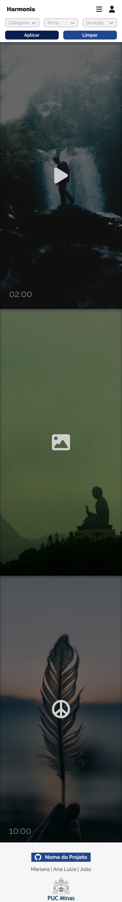
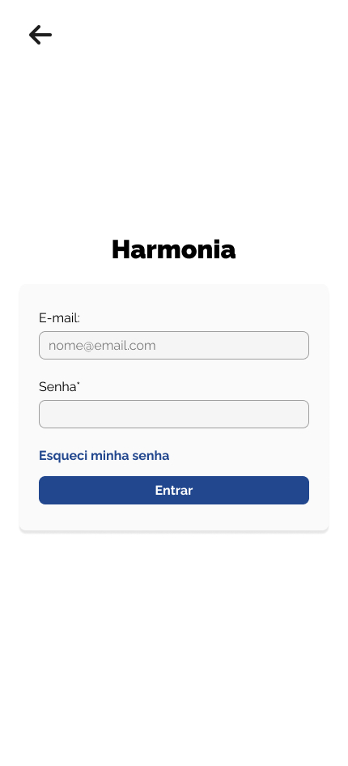
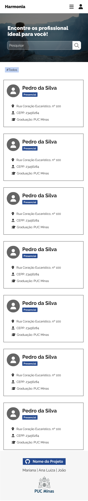
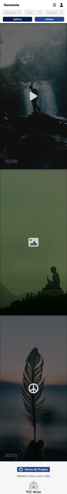
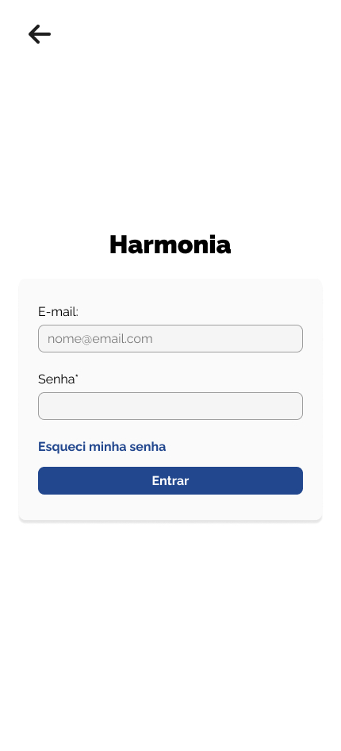
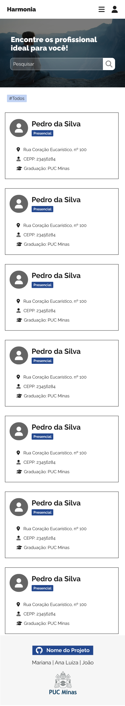
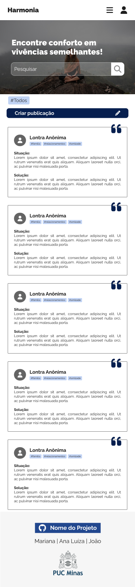
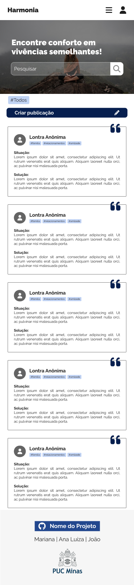

Introdução
O projeto é um site que auxilia na falta de controle emocional. Ele oferece ferramentas que possam auxiliar o usuário, como vivências similares de demais usuários, conteúdos com dicas de meditação que visam uma maior tranquilidade e psicólogos confiáveis para realizarem consultas.
Informações Gerais
- Projeto: Harmonia - Falta de Controle Emocional
- Repositório GitHub: Template Trabalho Interdisciplinar
- Membros da equipe:
Contexto
Nossa aplicação visa abordar questões relacionadas à ansiedade, tristeza e raiva, oferecendo soluções para ajudar as pessoas a lidarem com esses desafios emocionais.
Problema
Atualmente, a sociedade enfrenta um aumento constante da falta de controle emocional, como ansiedade, estresse, tristeza e raiva, resultantes do excesso de trabalho e estudo.
Objetivos
O site tem o intuito de mitigar o problema do excesso de falta de controle emocional, criando vias que possibilitem de maneira gratuita e acessível atingir diversos públicos, e auxilia o usuário a entender e a controlar melhor essas emoções.
Justificativa
A ansiedade é um problema crescente em todo o mundo, e o Brasil não é exceção, com índices particularmente elevados. A pandemia, juntamente com mudanças econômicas, altas taxas de desemprego e preocupações com segurança pública, contribuem para esse cenário. Além disso, o Brasil enfrenta uma alta incidência de depressão. Diante desses desafios, é crucial buscar maneiras de mitigar a ansiedade, depressão e também a raiva. Nosso site se propõe a oferecer soluções eficazes para lidar com essas questões, reconhecendo sua importância e impacto na vida das pessoas.
Público-alvo
O site está aberto a qualquer pessoa que enfrente problemas emocionais, mas temos um foco particular em indivíduos entre 15 e 30 anos. Além disso, garantimos acessibilidade, pois priorizamos a compatibilidade com dispositivos móveis, dispensando a necessidade de um computador. A interface é intuitiva e simples de entender, projetada para ser utilizada por qualquer pessoa, independentemente do nível de familiaridade com tecnologia. Não é necessário um conhecimento avançado, apenas habilidades básicas.
Concepção (Design Thinking)
Para realizar a concepção do projeto utilizamos de algumas ferramentas de Desing Thinking, possibilitando assim, uma maior compreensão do nosso problema e como atuar para uma solução voltada para o usuário.
Processo de Design Thinking
O arquivo que se segue apresenta o resultado desse processo.
Especificações do Projeto
O projeto é voltado para ser uma aplicação gratuita e que pode oferecer acesso a diversos públicos, levando em consideração pontos ressaltados pelos entrevistados e necessidades do público geral.
Histórias de Usuários
Com base na análise das personas foram identificadas as seguintes histórias de usuários:
EU...PERSONA |
EU QUERO/PRECISO...FUNCIONALIDADE
|
COMO EU ALCANÇARIA ESSE OBJETIVO?MOTIVO/VALOR |
|---|---|---|
| Sandra | Me sentir menos ansiosa e com mal estar. | Lendo informações pertinentes e verídicas sobre temas de ansiedade |
| Pedro | Pensar menos no meu futuro e gastar mais tempo com soluções. | Por meio de ferramentas entratégicas para colocar soluções em prática, como conteúdos de vídeos e fotos para controle mental. |
| Lívia | Afetar menos minha vida pessoal, e estar menos tensa com meu presente. | Por meio de uma seção com psicólogos mais acessíveis e próximos a mim. |
Requisitos
As tabelas que se seguem apresentam os requisitos funcionais e não funcionais que detalham o escopo do projeto.
Requisitos Funcionais
| ID | Descrição do Requisito | Prioridade |
|---|---|---|
| RF-001 | Publicação de vivências do público | MÉDIA |
| RF-002 | Contéudos | Meditações | ALTA |
| RF-003 | Acesso a psicólgos próximos | BAIXA |
Requisitos Não-Funcionais
| ID | Descrição do Requisito | Prioridade |
|---|---|---|
| RNF-001 | Privacidade de informações pessoais | ALTA |
| RNF-002 | Psicólogos verificados pelo CEPP | ALTA |
| RNF-003 | Sugestões de meditação | MÉDIA |
Projeto de Interface
Artefatos relacionados com a interface e a interacão do usuário na proposta de solução.
User/Screen Flow e Protótipo interativo
Artefatos relacionados com a interface e a interacão do usuário na solução proposta.
User Flow

Protótipo Interativo
Harmonia - Falta de Controle Emocional
Wireframes
Protótipo de telas do sistema em baixa fidelidade.

 







 

Metodologia
A metodologia utilizada foi o kanban.
Ferramentas
Relação de ferramentas empregadas pelo grupo durante o projeto.
| Ambiente | Plataforma | Link de Acesso |
|---|---|---|
| Processo de Design Thinking | Miro | https://miro.com/app/board/uXjVKdBjxi4=/ |
| Repositório de código | GitHub | https://github.com/ICEI-PUC-Minas-PMGCC-TI/ti-1-pmg-cc-m-20241-g12-falta-de-controle-emocional |
| Hospedagem do site | Heroku | Site não hospedado |
| Protótipo Interativo | Figma | https://www.figma.com/design/Qs3WqeYkFjVvNWnZFOLCAg/TIAW---2x?node-id=0-1&t=AUlOafbe0Kn1PxNp-1 |
Gestão do Projeto
Divisão de papéis
- Ana Luíza ficou responsável por fazer a documentação do trabalho.
- Mariana por fazer o wireframe e o design thinking.
- João por fazer o mapa de empatia, os slides da apresentação e o roteiro do pitch.
Foi utilizado a metodologia Kanban a fim de organizar de maneira mais prática o trabalho de cada um dos participantes.
Controle de Versão
Estrutura do fluxo de trabalho no ambiente do GitHub.
Cada membro do grupo teve a sua branch, cada uma com seu próprio nome, e ao final do trabalho juntamos as partes na branch master.
Solução
Esta seção apresenta todos os detalhes da solução criada no projeto.
Seção de Vivências
É uma seção do site em que aparecem as postagens feitas pelos usuários contando suas vivências. Logo antes das postagens há
uma opção de fazer uma postagem. Nessas postagens o usuário conta sua situação e, caso ela tenha sido resolvida, pode-se colocar
a solução também. Além disso, há uma barra de pesquisa para procurar por postagens com algum tema específico que o usuário queira.
Seção de Psicólogos
Nessa seção do site aparecem os psicólogos que vivem na mesma região do usuário e o contato deles, além do tipo de atendimento
(presencial, online...). Há também uma barra de pesquisa caso o usuário esteja procurando por algum psicólogo ou tipo de
atendimento em específico.
Seção de Conteúdos
Nessa seção o usuário pode ver dicas de meditação e salvá-las nos favoritos caso queira. Além disso há uma barra de pesquisa e filtros caso ele esteja procurando por algo em específico.
Apresente cada uma das funcionalidades que a aplicação fornece tanto para os usuários quanto aos administradores da solução.
Inclua, para cada funcionalidade, itens como: (1) titulos e descrição da funcionalidade; (2) Estrutura de dados associada; (3) o detalhe sobre as instruções de acesso e uso.
Video do Projeto
O vídeo a seguir traz uma apresentação do problema que a equipe está tratando e a proposta de solução.
O video de apresentação é voltado para que o público externo possa conhecer a solução. O formato é livre, sendo importante que seja apresentado o problema e a solução numa linguagem descomplicada e direta.
Utilize o recurso de compartilhamento via embed e inclua o vídeo logo abaixo.
...... COLOQUE AQUI O SEU VIDEO ......
Funcionalidades
Esta seção apresenta as funcionalidades da solução.
Apresente cada uma das funcionalidades que a aplicação fornece tanto para os usuários quanto aos administradores da solução.
Inclua, para cada funcionalidade, itens como: (1) titulos e descrição da funcionalidade; (2) Estrutura de dados associada; (3) o detalhe sobre as instruções de acesso e uso.
Funcionalidade 1 - Cadastro e leitura de Vivências
Permite a pesquisa, leitura e inclusão de postagens.
- Estrutura de dados: (na próxima seção)
-
Instruções de acesso (Ver as postagens):
- Abra o site e clique em "Vivências".
-
Instruções de acesso (Fazer postagem):
- Abra o site e clique em "Vivências";
- Clique em "Criar publicação";
- Preencha o formulário e clique em "Salvar". Você vai ser redirecionado para a seção de vivências e poderá ver sua postagem lá.
Funcionalidade 2 - Cadastro e seção de Psicólogos.
Permite se cadastrar como psicólogo ou ver os psicólogos disponíveis perto do usuário.
- Estrutura de dados: (na próxima seção)
-
Instruções de acesso(Para ver os psicólogos):
- Abra o site e clique em "Psicólogos".
-
Instruções de acesso(Se cadastrar como psicólogo):
- Abra o site e clique nas 3 barras do lado superior direito e crie e entre na sua conta;
- Clique nas 3 barras de novo e em "Perfil";
- Clique em "Cadastrar como psicólogo", preencha os dados e clique em "Salvar".
Funcionalidade 3 - Dicas de meditação e favoritos
Permite a pesquisa e a leitura das postagens e a opção de colocá-las nos favoritos.
- Estrutura de dados: (na próxima seção)
-
Instruções de acesso(Para ver as dicas):
- Abra o site e clique em "Conteúdos".
-
Instruções de acesso (Para marcar como Favorito):
- Abra o site e clique em "Conteúdos";
- Escolha o post que você quer colocar nos favoritos;
- Clique no ícone que parece um marcador de livros.
- Para ver os seus favoritos, vá nas 3 barras do lado superior direito e clique em perfil;
- Em seguida clique em "Favoritos".
Estruturas de Dados
Descrição das estruturas de dados utilizadas na solução com exemplos no formato JSON.
Apresente as estruturas de dados utilizadas na solução tanto para dados utilizados na essência da aplicação quanto outras estruturas que foram criadas para algum tipo de configuração
Nomeie a estrutura, coloque uma descrição sucinta e apresente um exemplo em formato JSON.
Estrutura de Dados - Cadastro e leitura de Vivências
Informação das postagens.
"vivencias": [
{
"id": "45cb",
"titulo": "O titulo da postagem",
"situacao": "Eu fiquei triste",
"solucao": "Parei de ficar triste",
"usuario": "0a7d01db-2b3a-44d1-8a20-574010363476"
}
]
Cadastro e seção de psicólogos >
Informações sobre os psicólogos e os tipos de atendimento.
"psicologos": [
{
"id": "55fb",
"cpf": "45456456679",
"cepp": "43678645",
"endereco": "Avenida Abílio Machado, 915",
"formacao": "Unifor",
"atendimento": "3",
"usuario": "b5b01a0f-6a7d-44e5-a233-532226464010"
}
]
"atendimentos": [
{
"id": "1",
"tipo": "Presencial"
}
]
Dicas de meditação e favoritos >
Informações sobre as dicas de meditação e favoritos.
"conteudos": [
{
"categoria": "Meditação",
"tema": "Respiração",
"duracao": 2,
"titulo": "Meditação Guiada para Respiração",
"id": "1665"
}
]
"favoritos": [
{
"id": "9476",
"favorito": "1cdf",
"usuario": "0a7d01db-2b3a-44d1-8a20-574010363476"
}
]
Módulos e APIs
Esta seção apresenta os módulos e APIs utilizados na solução.
Apresente os módulos e APIs utilizados no desenvolvimento da solução. Inclua itens como: (1) Frameworks, bibliotecas, módulos, etc. utilizados no desenvolvimento da solução; (2) APIs utilizadas para acesso a dados, serviços, etc.
Images:
- Unsplash - https://unsplash.com/
- Freepik - https://br.freepik.com/
Fonts:
- Ralawey : Google Fonts - https://fonts.google.com/specimen/Raleway
- Icons: FontAwesome - https://fontawesome.com/icons
Scripts:
- Bootstrap 4 - http://getbootstrap.com/
FAQ
Perguntas e respostas comuns associadas ao projeto.
Apresente uma lista de perguntas e respostas comuns associadas ao projeto. Inclua perguntas como: (1) detalhes de acesso e uso do projeto; (2) informações sobre a instalação e configuração da aplicação; (3) questões sobre a manutenção da aplicação; (4) detalhes sobre a integração da aplicação com outros sistemas; (5) questões sobre a segurança da aplicação.
Referências Bibliográficas
Esta seção apresenta as referências bibliográficas utilizadas no projeto.
Apresente as referências bibliográficas utilizadas no projeto. Inclua itens como: (1) livros, artigos, tutoriais, etc. utilizados no desenvolvimento da solução; (2) links para sites, blogs, etc. utilizados no desenvolvimento da solução.
...... COLOQUE AQUI O SEU TEXTO ......